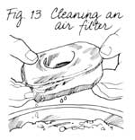

"Won't Start"
Mother's Handbook
by Pat Stone
May/June 1989
Before you say, "I've got a torch and a hacksaw and I know how to use them!" read this guide.
AH, SPRING, TIME TO GET outside and do. Cut that grass! Turn that soil! So you roll the old lawn mower or rotary tiller out of storage, give the crank a couple of vigorous pulls-and a few more pulls-and a few more pulls-and then start cursing. "The !&@*!! thing won't start!"
What now? If you're already a shade-tree mechanic, you hunker right down and start tinkering with the engine. But, if like me (a certified carburetor klutz) you're frankly intimidated by that mishmash of wires, hoses, valves and levers, you probably just keep doing the only thing you know how to do: Yank the crank. A few dozen pulls later, your arm's sore and your temper's shot. Defeated, you roll the renegade yard-aid back into the shed and storm into the house. One perfect spring day-ruined.
Your options now? Either hope the machine'll change its mind and crank up the next time you take it out, or haul the blamed thing off to a repair shop. You'd probably take it to a shop right away except for that nagging fear that the malady is some simple little thing that any nitwit should know how to fix-and that your mechanic will be only too glad to point this out.
If this scenario sounds familiar to you, read on. The purpose of this article is to help you learn how to diagnose common small-engine ailments, fix the ones you can and toss up your hands gracefully when you can't. It's based on the hands-on know-how of Dennis Burkholder, MOTHER's own workshop wizard. In his 13 years with MOTHER, our "Mad Swede" has had to build everything from a supposedly perpetual motion machine ("a perpetual headache machine," Dennis called it) to a leaning, three-wheeled automobile. Before coming to us he did such things as help design lawn mowers and even test-drive snowmobiles. The man knows engines inside and out.
Before we begin, I need to share a confession, define a few parameters and offer a bonus.
The confession: We can't begin to cover all small-engine models and problems. We'll just hit some common ailments that most anybody can treat-by following a logical troubleshooting sequence through the engine. Maybe these steps will help you shake off any timidity and get you interested in exploring and learning more. (There are plenty of good books and mechanics to guide you.) But even if you go no further than the steps we've outlined, we're betting you'll be able to fix the great majority of start-up troubles that strike your small engines.
The parameters: We'll be dealing with engines no bigger than eight horsepower-the kind you find in chain saws, walking (and some small riding) mowers, string trimmers, rotary tillers and leaf blowers. According to Burkholder, most of these are either Briggs & Stratton or Tecumseh (Craftsman, for instance, uses Tecumseh engines). Several other engines have features in common with the two most common ones (for example, Lawn Boy engines have a Tecumseh-like carburetor and a Briggs-type ignition). And to make things simpler, we'll focus mainly on lawn mowers. Most all of the advice, however, applies to the other small machines, as well.
And the bonus: We'll toss in several of Dennis's own shop-spun "tricks of the small-engine trade" as we go along.
First try the "Burkholder choke"--tilt the mower handle back to the ground.
Gas, Oil, Spark
Let's (ahem) get started. You cranked that mower, fiddled with the throttle switch and cranked some more, but it won't fire up. First, of course, check to see if the machine has gas. While you're at it, check the oil levels, too. For that matter, you'll probably want to change the oil. (See the sidebar "Man Makes It; Man Breaks It.")
If you're real lucky, the problem's just that oil needs to get to the rings around the engine cylinder. (A dry cylinder needs that lubrication to give it an airtight seal.) Try tipping the mower handle back to the ground for 10 seconds so oil can float back into the engine. This trick is also known as the "Burkholder choke," because it makes fuel more likely to run into the engine-thereby helping some recalcitrant machines get going. Now crank 'er a few more times. Don't overdo it; as Dennis says, "If it don't start in 10 pulls, you're sucking wind."
If you're real unlucky, you've pulled the crank rope so many times that it finally broke and came off in your hand. In that case, head off to the sidebar "Rewind Repair," and come back here when you've finished.
OK, it's got gas, oil and a good crank. But nothing, absolutely nothing, happens when you pull the rope. It's time to check the spark. You'll have to find out if the electricity needed to ignite gasoline is flowing through the engine.
Pull the wire off the end of the spark plug-you can hang it on the hook provided on the engine (Fig. 1). Then get a spark plug socket or wrench (a widely available tool), and unscrew the plug from the engine. Use steady, not sharp, force on the wrench. If the plug won't come out, squirt some penetrating oil (such as Liquid Wrench or WD-40) down along its edge, wait a few minutes, and try again. When you get the plug out, look at its tip. If that's black and grimy, clean it by running some fine sandpaper or a wire brush over both sides of the gap until shiny metal shows. You might also check the size of the gap. Most spark plugs should have an opening of around .25 mm in width (your owner's manual will list the right number). You can use a feeler gauge (another inexpensive, basic tool) to help you set that distance properly (Fig. 2). Widen or compress the gap until the appropriate gauge fits snugly in the opening. (Dennis often uses a pocketknife blade-one that he knows is close to the appropriate width-for a feeler gauge.)
Now test the plug to see if electricity jumps across its gap. To do this, hook the spark plug wire back on the outside end of the plug, and, with a stick of wood, hold the plug so its threads, but not its tip, touch a surface (preferably unpainted) on the engine (Fig. 3). Important: Don't hold the plug with your fingers. If you're touching any metal when you do your spark test- YO W! You'll get a shock that'll make you think long and hard about any more small-engine repair.
Also, don't hold the plug near the spark plug hole, or your spark might ignite gasoline fumes coming out of that opening. By the way, use commonsense precautions the entire time you're working on any engine. No cigarettes or flames of any kind. And always make sure the plug or plug wire is disconnected before you fiddle inside the engine-you want to avoid any possibility of the engine's starting up while you're working on it.
All set? Then pull the crank some, and look to see if a blue or orange spark jumps across the plug's gap. Remember, for any spark test to work, the starter switch has to be set to "start" or "run" (not "off"), and if your machine has a kill switch-the kind of safety lever that automatically shuts off the engine if released-you'll have to hold it back.
(By the way, are you wondering why you're holding the threads against the engine? Because when a spark plug is working properly, current comes in its outside tip and up a metal rod inside the insulating porcelain body. Then it jumps the gap in the inner tip and travels through the threads back to the body of the engine.)
Did you get a spark? Good, then you can put the plug back in place and see if the engine will now start. If not, at least you've learned that your problem is not a lack of electricity, so you can move on to the section "Chasing Fuel."
If you didn't get a spark, replace the old plug with a new one that's the same size and type, and test again. (A local hardware store should have the part.)
Still no spark? Well, you've done the first, easy fix and made sure you've got a working plug. So your problem is probably in the engine's ignition (starter). There are two common ignition systems in use today: electronic (also called CDI) and magneto. We'll start with the electronic one, since it's largely replaced the more troublesome magneto (points-and-condenser) starter.
You are now entering the hitherto forbidden world of engine disassembly.
Electronic Ignition
To get to the CDI, you have to take off the engine cover. You're now entering the hitherto forbidden world of engine disassembly, so here are a couple of cautionary words to help you safely in and out. One: Remember to unhook the spark plug or its wire before you start. Two:Keep track of every part you take off. It's not that hard to take an engine apart; the tough part is putting it all back together.
Many experienced home mechanics thread bolts back on nuts after removing a part or make drawings of what they're disassembling so they can be sure to put the pieces back in the right places and sequence. Those are both good ideas-it's amazing how quickly you can have a world of little homeless metal creatures lying around. Every one of those wayward parts has a purpose and needs to get back to its rightful place. It's like hiking a new trail in the woods. Check over your shoulder every once in a while to see where you've been, and you'll find your way back home just fine.
Once you have removed the engine cover, you should see a flywheel (a big round disk with a lot of fins-the engine-cooling fins sticking up from it). The electronic ignition is a little plastic-enclosed box or disk that's almost touching the flywheel (Fig. 4). If there's corrosion on any of its wire leads or at the point it bolts to the engine, electricity won't flow through the system. And sometimes those parts can get corroded if the machine's been left out in just one good rainstorm.
So pull out the connecting wire ends, and scrape or sand off any corrosion. Then disconnect the two bolts that hold the CDI on, and clean off any crud that's accumulated where the ignition connects to the engine.
The next step, putting the unit back on, is a bit tricky, because you have to make sure it's just the right distance from the flywheel. Your owner's manual will give you the exact specifications for this gap (generally something like .009 to .012 inch), and you can use a feeler gauge to set it. Or you can pull Dennis's shade-tree mechanic's trick of using an ordinary matchbook cover to set the gap. Either way, as you bolt the ignition back on, tap it in the back on alternating sides several times to get the gap set right on both sides, and check it repeatedly with your gauge or matchbook feeler (Fig. 5). You can then test for spark again by holding the unscrewed (but hooked to its wire) spark plug against the side of the engine and spinning the flywheel by hand, A spark should jump across the gap in the plug.
If there's still no spark, replace the electronic ignition, being sure you set the new one in with the appropriate gap. And if after that you still don't have any spark, you've reached a dead end. The problem's beyond amateur status, and it's time to take the machine to a repair shop. At least now you shouldn't be embarrassed: Your mower's not down with a dumbbell's problem.
Magneto Ignition
What about that other ignition system? Most small engines made in the last five years have electronic ignitions, but there are plenty of older machines around with the points-and-condenser setups. If you've got one of those and no spark coming through your (good) spark plug, you need to check the points. This time you've got to pull off the flywheel as well as the engine cover. Getting a flywheel off is tricky: If you try to pry it off or grab it with pliers, you're liable to break off some of those vital cooling fins. You can purchase a handy flywheel remover for the job, or use this Burkholder shop trick. First, remove the nut or star-shaped what-zit (a starter clutch, actually) that helps hold the flywheel on. Then rotate the flywheel by hand until the magnet on it is opposite the spark plug. Now jam as much clothesline or small nylon rope as possible into the spark plug hole (Fig. 6), and then rotate the flywheel counterclockwise until it locks. (What you've just done is cram rope in the cylinder when the piston was down. Then you turned the piston up so it compressed the rope and locked itself and the flywheel in place.) This will keep the flywheel and central shaft from rotating while you undo its bolt.
By the way, the rope-in-the-hole trick also comes in handy when you want to take off a mower blade to sharpen it. And it automatically ensures that the spark plug is safely disconnected when you're fiddling down below with the blade. (Speaking of mower blades, here's an extra Burkholder hint: If you find your mower frequently getting bogged down in too-tall grass, replace the current blade with a new, slightly shorter one. The extra deck clearance will reduce grass clogging and help the mower plow right through that tough stuff.)
Now, screw a nut flush on the top of the flywheel shaft, and have a helper pick up the entire mower by the flywheel. Set a board over the central shaft (both the flush nut and the board help protect the shaft from getting damaged by the blows about to come), get a heavy hammer, and give that board a good whack right over the shaft (Fig. 7). The mower should drop down with a clang, leaving your helper holding the now-freed flywheel. Warning: If this technique doesn't work by the third blow, stop using it. Take your machine to a pro. If you bang too much on the shaft, you're liable to mess up the oil seal at the bottom of the mower. And if oil starts running out the bottom of the mower (during your repair work or any other time), you're mechanic-bound for a new oil seal.
OK, the flywheel came off just fine (we hope). Underneath it, you'll see a metal box containing the points and condenser. Open it up (Fig. 8). You may want to clean the points and reset them according to manufacturer specs (the thickness of a matchbook cover will do). Most people, though, would go the simple, reliable route of purchasing a new points-condenser-spring set and putting it in.
When you're done, reassemble the engine. Make sure you reinsert that little rectangular or half-moon metal piece that aligns the flywheel on the crankshaft (Fig. 9). And if that part-called a shaft key-looks at all worn, replace it. (Some mechanics recommend replacing the key anytime you remove it to avoid future breakage.)
If none of that gave you the spark you've been looking for, it's dead-end time again. Pack 'er off to a pro.
Chasing Fuel
Suppose you've got spark all right, but the engine still doesn't start. OK, 'fess up: Did you store your mower "wet," i.e., full of fuel? That's a mistake. If you keep your mower in an enclosed space, the fumes that accumulate can be hazardous. In addition, that gas, after repeatedly getting chilled and warmed over the winter, may have invited water to condense in the tank. If the water sank to the bottom of the tank-where the engine draws its fuel-you're now trying to run a gasoline engine on H2O. Got to get shed of that water, partner.
You may have been smart enough to store the mower "dry," but then careless enough to fill it from a fuel can that's been sitting half full all winter. Whoops. Well, don't get down on yourself: A lot of people fool themselves with the bad-gas trick every spring. (Incidentally, if your machine has been stored full for several seasons and the fuel now smells like paint thinner, you've got spoiled gas. It, too, will need replacing.)
To get rid of this faulty fuel, first drain the tank. You can easily disconnect the gas tank on a Tecumseh engine and dump the gas out. Then take off the bottom of the carburetor float bowl (Fig. 10), which is just in from the air filter, and wipe up the gas that (surprise!) spills out. (Try to keep the doughnut-shaped float valve from opening all the way down as you do this or its float needle may fall out.) Put the bowl back together and the tank back on. With a Briggs, use a cheap turkey baster or a siphon hose to suck the liquid out of the gas tank.
To clear the fuel lines on both engines, you'll want to flood and unflood the engine a few times to work the old fuel through. Put new fuel in the tank, set the engine at full choke (the starting position), and crank it several times to draw a lot of fuel into the ignition chamber. Then let it sit for 10 minutes or so, till that batch vaporizes, and repeat the procedure. Once you've done that a bit, you should have good petrol at the piston.
That may well solve all your problems. But maybe you've got good spark and good gas, but still not good going. The engine doesn't catch, or maybe it fires and put-puts a bit but then always dies out. Dennis says you've probably got a fuel supply problem-either you're getting too much or too little.
Unscrew the spark plug and see if it's dry (you're getting no fuel) or dripping with gas (you're getting too much). You might even try squirting a few-only a few-drops of gas into the spark plug hole with a window-cleaning bottle or other sprayer, reinserting the plug and cranking. If it starts right up, then promptly dies out, you're definitely not getting fuel.
Dry Plug = No Fuel
Let's see if we can help that dry plug. Screw it back in and attach it. Try cranking the engine several times with the throttle switch set on "off." That way the machine won't get any spark but should still be drawing fuel. Now, set 'er on "start" and see if she will.
No luck? Then, engine still set at "start," take off the air cleaner, and smother the choke tube (right there in the center) with your hand and give one or two (but no more) pulls. That way you'll be trying to give the engine a rich mixture, one that has more gasoline than air.
It may start up and run. It may start up and then die. Or it may not start at all. If one of the last two happens, your engine is definitely not sucking fuel into the ignition chamber (where the spark plug and piston meet). You got no gas. Why? The trouble is probably in the carburetor. (Say, you didn't cover the little pinholes in your gas cap or let them get clogged, did you? If they're covered, the engine can't draw fuel at all.)
Here our paths diverge, depending on your engine type. Briggs & Stratton engines have different carburetors than Tecumsehs do. Let's start with the Briggs. The two most likely clog spots in it are the fuel pipe and the fuel needle.
The fuel pipe is a small, tapering plastic tube that goes directly down from the carb to the fuel tank. It has a little ball in it--a check valve--that allows fuel to flow only one way (Fig. 11). Pull the fuel pipe off. (To get to it, you may have to remove the carburetor and gas tank jointly from the engine, then take the carb off the tank.) Can you jiggle the ball in the tube? If not, blow the clogged pipe out from the bottom to clean it. (If your engine commonly dies when the tank's half empty, you probably need to clean this check valve.)
The fuel needle sits above the check valve. It adjusts how much fuel can get into the carburetor. Unscrew it and see if the tiny hole inside is clogged (Fig. 11). If so, clean it with a carburetor cleaner or some other solvent, or blow it out with compressed air. Screw the needle back in, gently, as far as it will go, and then back it out one and a quarter turns.
There may be other adjustment screws on your carburetor. They're for such things as setting high and low idle speeds. Unless you know what you're doing, leave 'em darn well alone. But as long as you're fiddling with the carburetor, why not squirt all its orifices with some store-bought carburetor cleaner? That alone sometimes brings engines back to life.
Put everything back together, give her a few cranks, and see if she runs. Our guess is she will. If not, sorry. Load her up; it's shop time.
Now, let's look at the dry-plug trouble with the Tecumseh carburetor. You can't do as much to this one. It doesn't suck air up from the tank the way the Briggs carb does. Instead, the tank sits higher than the carburetor and the fuel flows by gravity down into the carburetor. A float valve (similar to the shutoff in your toilet tank) controls this flow.
If you're having fuel troubles, open up the carburetor from beneath. Since the doughnut-shaped float valve normally sits in fuel, some gas may spill out. jiggle the valve slightly up and down (Fig. 12); not too far or the float needle may fall out. It should let gas in when it's down and shut it off when it's up. jiggling often fixes a no-flow problem. If it does, close the carburetor back up and-hip, hip, hooray-fire away.
That ought to clean up your no-fuel problem. If not, you know where to go.
OK, 'fess up: Did you store your mower "wet"?
Wet Plug = Too Much Fuel
Got a wet plug? (Do little white puffs of smoke come out of the muffler, but the engine doesn't really run? Do you smell gas?) You're flooding the engine. Maybe you've just been cranking so much that you've pulled too much gas into the ignition chamber. You can remove the plug and crank some more (the engine won't suck fuel with the plug out), then try again with the plug back in. Or try the easy way: Take a break. Drink some iced tea and come back in 10 minutes when the excess fuel's had a chance to vaporize. (It will vaporize more quickly if the plug's been removed.)
Still no luck? Take off your air filter and crank some. Did it fire up? If so, you need to fix that dirty filter-it's blocking good air flow. Clean foam filters by washing them in kerosene, solvent or dishwater, rinsing them out, then giving them a light, squeezed-in coating of SAE 30 motor oil (Fig. 13). Replace paper filters.
That wasn't the problem? Try this. If you've got a Tecumseh engine, rig a coat hanger wire so you can pull the governor all or barrel (Fig. 15) so it holds the choke open the way back while you're cranking (Fig. 14). and lets in lots of air while you're cranking. If you're a Briggs owner, take the air filter That didn't work, either? OK, OK. jiggle off, and set that long screw in the carburet- your Tecumseh float valve just like you would if the plug wasn't getting enough gas. Maybe that'll fix things.
With a Briggs, it could be that your choke doesn't open up properly. Take the air cleaner off, unhook the spark plug, and set the engine throttle on a setting between start and normal running level. Pull the crank and see if the choke disk jiggles (to let more air in).
If it doesn't, replace the carburetor. You can often get a working carb with gas tank inexpensively at a local flea market.
Another Briggs trouble could be a needle valve that's too open, letting too much fuel through. Tighten it (clockwise) by quarter turns until the engine runs evenly.
Tips and a Tale
We've now run through Burkholder's list of easy carburetor fix-its. (Float valves can be adjusted, but that's not so easy.) There's one other common lawn mower ailment you can deal with at home. If despite all your efforts your mower doesn't run, or runs rough, or is hard to start when it's hot, you may have a sheared shaft key. This is usually caused when the blade bangs hard into some object. (Did that happen and the mower keep running, but the next time you tried to start 'er up, it wouldn't go? Ah hah!)
The key is a small, about one-half-inch-long metal piece (Fig. 9) that connects the main mower shaft and the flywheel. (Engines that use belts to connect the drive and the object being driven are not likely to have key troubles.) If the key's been banged hard, it may be sheared-actually, partly indented-throwing the flywheel slightly off its alignment on the shaft and thereby making the engine ran rough (if at all). To remedy this, take the flywheel off the engine exactly as described before. Now look down at the key. If it looks like one in Fig. 16, work your way down until you can get the key out. Replace it, and your machine is bound to run a lot better.
That's about it for entry-level engine repair. One last Burkholderism and then I'll tell you a story. If your engine starts but runs rough or won't pull under a load, check for 1) contaminated fuel, 2) a dirty air filter, 3) proper spark plug gap or 4) an old plug that needs replacing. Your problem probably comes from one of those four things.
The story's on me. One day this past spring, I pulled out both my mower and my tiller (so I could mow an especially weedy section of my garden before I tried to till it), and neither one would start. I was out there, cranking and cussing two machines at once!
I didn't get either one running until I got some advice from my helpful (and understanding) neighbor, Franklin Sides. Watery gas had stopped my mower, and chain saw gas (the gas-oil mix you're supposed to use only in two-cycle engines) had gummed up my tiller's spark plug.
That was it--I'd proved my stupidity often enough. I went to Dennis and got a two-day small-engine cram course. Then I checked out eight books on the subject from our editorial library, tried to stay awake through all those and wrote down everything I learned.
Yesterday, I took my graduation exam. I grabbed my little Briggs-engine lawn mower, took it through every repair step covered in this article and then tried to put it back together right. It wasn't busted-, but I figured if it still ran after I got through with it, I'd be doing all right.
So I tested the spark plug (once without a block of wood to hold it, and learned that, yes, spark plug shocks do hurt). I blew out the fuel pipe and gapped the ignition (after I got to 'emI had parts everywhere). Then
I carefully, studiously, painstakingly put it all back together ... and had one bolt left over. Egad! Definitely disconcerted, I disassembled again until I found the culprit's hidden home under the rewind.
Then I put 'er all back together, pulled on the crank-and guess what?--it started!
Regular maintenance is a lot less work than emergency repair.
MAN BREAKS IT
READ LITERALLY, THE PHRASE above leaves out half of the human species. Still, this repair shop truism illustrates an important point: Most engine failures are due to operator failures. The person, male or female, running the machine doesn't take proper care of it and, sooner or later, gets to pay the price.
This workshop proverb is an especially important warning for those of us who aren't good at fiddling with engines. To put it one way, the more nervous you are about fiddling with carburetors, the more important it is that you keep cleaning that air filter.
If you want some problems that will definitely have you visiting a repair shop, don't keep the oil level up in an engine. Maintaining oil properly is the single most important step you can take to lengthen the life of a small engine. It lubricates and helps cool the crucial power producing pistons and valves-parts that we hardly even mentioned in this article. And small engines use up their oil more quickly than big ones. So check the level every time you start up.
Likewise, use the right kind of oil, and change it regularly. Dirty oil slowly wears down the engine, grinding those vital inner parts and shortening their life spans. Your owner's manual will tell you to change oil something like every 10 to 25 hours. Dennis says twice a season ought to do for most folks.
Cooling fins and the metal of the muffler help keep the engine from overheating (small engines don't have radiators). The fins should be brushed clean as needed, and the muffler should be kept in good condition.
So which would you rather deal with: regular maintenance or regular repairs? It's your choice.
REWIND REPAIR
SOMETIMES AN ENGINE WON'T start because the crank rope just came off in your hand or that cord doesn't zip back into the engine after you yank it. Fixing a pull starter is a little complicated, because you have to fool with the tensed spring that keeps the crank rope in place. The job can be frustrating-if you don't know the Burkholder trick that simplifies it.
Let's say the rope just broke. Unscrew the rewind mechanism from the engine. Handle it carefully-you don't want that spring playing jack-in-the-box on you. Bend up the tabs that hold the plastic rewind wheel in place, and use a little stiff wire (such as a section of coat hanger) to poke one end of your new, same-size, nylon rope through its feed hole in the wheel. Tie that end off. Now here's the trick: File, carve or drill out a little notch in the side of that wheel. That way you can feed the rope in place a whole lot easier. Hook the rope in the notch, and use that to wind it around the center and recreate tension in the spring.
Once you've got the rope well wound and the spring tight, line the notch up with the casing hole to the outside, clamp everything in place with locking pliers or a C-clamp (or a friend's hand), and thread (with wire again, if need be) the string through the hole. Tie on the handle, and bend down the holding tabs. Now you can put the rewind back on the engine.
Things get a little more complicated if the rope's still intact but won't return. In that case, the spring, not the rope, broke. Open the rewind up and snip the spring off flush at the end where it broke. Then, on a Briggs, use a hand file to dig out notches on both sides near the end (study the unbroken spring end for a model). That way you can work the spring sideways into its holding slot and then turn it straight. On a Tecumseh, bend the end back until it will hold in place. You can now wind the spring up tight (don't put it in backwards!), and hold it tense by banding it together with thread (the thin line will break the first time you yank the crank). Or, after hooking the outer spring end in place in the casing, wind it tight with the rope-in-the-notch trick discussed above.
|
BY KAY HOLMES STAFFORD |
BY KAY HOLMES STAFFORD |
BY KAY HOLMES STAFFORD |
|
BY KAY HOLMES STAFFORD |
BY KAY HOLMES STAFFORD |
BY KAY HOLMES STAFFORD |
|
BY KAY HOLMES STAFFORD |
 BY KAY HOLMES STAFFORD |
BY KAY HOLMES STAFFORD |
|
BY KAY HOLMES STAFFORD |
BY KAY HOLMES STAFFORD |
BY KAY HOLMES STAFFORD |
|
BY KAY HOLMES STAFFORD |
BY KAY HOLMES STAFFORD |
 BY KAY HOLMES STAFFORD |
 BY KAY HOLMES STAFFORD |
 BY KAY HOLMES STAFFORD |
|